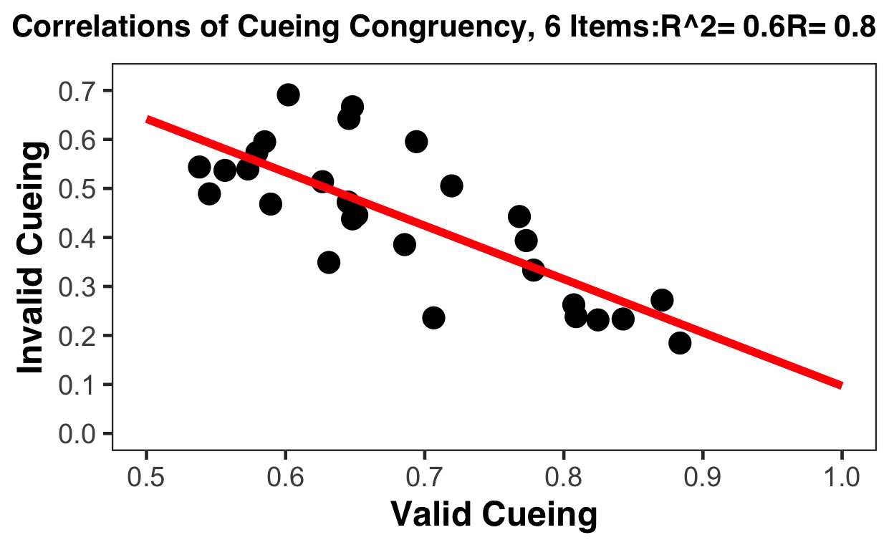

A short description of the post.
#Removing evrything from workspace
rm(list = ls(all = TRUE))
# Libraries
#install.packages("import")
library(here)
library(import)
library(foreign)
library(dplyr)
library(tidyr)
library(gridExtra)
library(ggplot2)
library(lme4)
library(RColorBrewer)
library(corrplot)
library(gee)
library(ez)
library(effects)
#======================================================================================================
#Process1-Data Loading and Organization
#======================================================================================================
# READING FILES
#setwd(Dir_Data)#Change directory
#Beh_text <- import(here("_posts", "2021-02-24-edld652project-webpage", "LetDriftGo_expcCue_BehP.txt"))
Beh_text <- read.delim('LetDriftGo_expcCue_BehP.txt', header=TRUE, fill=TRUE)
ds<-Beh_text;
head(ds)
SUBID BLOCK TRIAL IT INITIALTS RT RESP RESPSIDE ACC
1 200 2 2 1455.1006 7644.958 1434.9741 29 1 1
2 200 2 3 510.4336 13453.604 642.0020 29 1 0
3 200 2 4 426.5264 18301.540 546.2332 29 1 1
4 200 2 5 53.2380 22877.136 686.1405 29 1 1
5 200 2 6 193.9011 27598.103 610.6310 29 1 1
6 200 2 7 120.2569 32206.006 493.5671 29 1 1
TASKTS RSIJIT EVRATIO EVAVERAGE CATEGORY CUETYPE PROBETYPE
1 12141.04 932.5 1 -1.222222e-01 2 1 2
2 17149.10 642.5 1 2.775558e-17 1 0 2
3 21901.45 562.5 1 -1.000000e-01 2 1 1
4 26622.03 782.5 1 -3.000000e-01 2 1 2
5 31260.89 682.5 1 -5.555556e-02 2 1 1
6 35757.86 682.5 1 -2.222222e-02 2 0 1
CORRESP PU_1 PU_2 PU_3 PU_4 DU_1 DU_2
1 29 NaN 0.2967060 0.33161256 0.69813170 NaN 0.7555556
2 56 NaN -0.1570796 0.85521133 0.01745329 NaN 0.4000000
3 29 NaN 2.4609142 -0.08726646 -2.09439510 NaN 0.5777778
4 29 NaN 1.0122910 0.31415927 -1.02974426 NaN 0.8888889
5 29 NaN -0.7155850 1.55334303 0.76794487 NaN 1.4666667
6 29 NaN -1.0821041 -0.62831853 1.43116999 NaN 0.5333333
DU_3 DU_4 SUBGROUP CUECAT PV_1 PV_2
1 0.84444444 -1.51111111 1 2 0.8901179 1.1868239
2 -0.66666667 0.04444444 1 2 0.3839724 0.2268928
3 -0.22222222 -1.06666667 1 2 0.4537856 2.9146999
4 -0.80000000 0.66666667 1 2 0.8901179 1.9024089
5 0.04444444 -1.42222222 1 2 0.8552113 0.1396263
6 -0.88888889 -0.35555556 1 1 2.7925268 1.7104227
PV_3 PV_4 DV_1 DV_2 DV_3 DV_4
1 1.518436 2.2165682 -0.73333333 0.02222222 0.8666667 -0.64444444
2 1.082104 1.0995574 0.02222222 0.42222222 -0.2444444 -0.20000000
3 2.827433 0.7330383 -0.15555556 0.42222222 0.2000000 -0.86666667
4 2.216568 1.1868239 -0.73333333 0.15555556 -0.6444444 0.02222222
5 1.692969 2.4609142 -0.82222222 0.64444444 0.6888889 -0.73333333
6 1.082104 2.5132741 0.11111111 0.64444444 -0.2444444 -0.60000000
L1DV_1 L1DV_2 L1DV_3 L1DV_4 L1DVBIN_1 L1DVBIN_2
1 NaN -0.73333333 0.02222222 0.8666667 NaN 1
2 NaN 0.02222222 0.42222222 -0.2444444 NaN 3
3 NaN -0.15555556 0.42222222 0.2000000 NaN 2
4 NaN -0.73333333 0.15555556 -0.6444444 NaN 1
5 NaN -0.82222222 0.64444444 0.6888889 NaN 1
6 NaN 0.11111111 0.64444444 -0.2444444 NaN 3
L1DVBIN_3 L1DVBIN_4 DVBIN8_1 DVBIN8_2 DVBIN8_3 DVBIN8_4 DVBIN16_1
1 3 4 1 5 8 2 2
2 3 2 5 6 3 4 9
3 3 3 4 6 5 1 7
4 3 1 1 5 2 5 2
5 4 4 1 7 7 1 2
6 4 2 5 7 3 2 9
DVBIN16_2 DVBIN16_3 DVBIN16_4 DVab_1 DVab_2 DVab_3
1 9 16 3 0.7333333 0.0222222 0.8666667
2 12 6 7 0.0222222 0.4222222 0.2444444
3 12 10 1 0.1555556 0.4222222 0.2000000
4 10 3 9 0.7333333 0.1555556 0.6444444
5 14 14 2 0.8222222 0.6444444 0.6888889
6 14 6 3 0.1111111 0.6444444 0.2444444
DVab_4 L1DVab_1 L1DVab_2 L1DVab_3 L1DVab_4 DUab_1 DUab_2
1 0.6444444 NaN 0.7333333 0.0222222 0.8666667 NaN 0.7555556
2 0.2000000 NaN 0.0222222 0.4222222 0.2444444 NaN 0.4000000
3 0.8666667 NaN 0.1555556 0.4222222 0.2000000 NaN 0.5777778
4 0.0222222 NaN 0.7333333 0.1555556 0.6444444 NaN 0.8888889
5 0.7333333 NaN 0.8222222 0.6444444 0.6888889 NaN 1.4666667
6 0.6000000 NaN 0.1111111 0.6444444 0.2444444 NaN 0.5333333
DUab_3 DUab_4 L1DUab_1 L1DUab_2 L1DUab_3 L1DUab_4
1 0.8444444 1.5111111 NaN NaN 0.7555556 0.8444444
2 0.6666667 0.0444444 NaN NaN 0.4000000 0.6666667
3 0.2222222 1.0666667 NaN NaN 0.5777778 0.2222222
4 0.8000000 0.6666667 NaN NaN 0.8888889 0.8000000
5 0.0444444 1.4222222 NaN NaN 1.4666667 0.0444444
6 0.8888889 0.3555556 NaN NaN 0.5333333 0.8888889
DUCHANGE_1 DUCHANGE_2 DUCHANGE_3 DUCHANGE_4 L1DUCHANGE_1
1 NaN 2 2 2 NaN
2 NaN 1 1 1 NaN
3 NaN 1 1 2 NaN
4 NaN 2 2 1 NaN
5 NaN 2 1 2 NaN
6 NaN 1 2 1 NaN
L1DUCHANGE_2 L1DUCHANGE_3 L1DUCHANGE_4 DVCAT_1 DVCAT_2 DVCAT_3
1 NaN 2 2 2 1 1
2 NaN 1 1 1 1 2
3 NaN 1 1 2 1 1
4 NaN 2 2 2 1 2
5 NaN 2 1 2 1 1
6 NaN 1 2 1 1 2
DVCAT_4 L1DVCAT_1 L1DVCAT_2 L1DVCAT_3 L1DVCAT_4 CRCAT_1 CRCAT_2
1 2 NaN 2 1 1 NaN 1
2 2 NaN 1 1 2 NaN 0
3 2 NaN 2 1 1 NaN 1
4 1 NaN 2 1 2 NaN 1
5 2 NaN 2 1 1 NaN 1
6 2 NaN 1 1 2 NaN 0
CRCAT_3 CRCAT_4 L1CRCAT_1 L1CRCAT_2 L1CRCAT_3 L1CRCAT_4 DVCP2CUE_1
1 0 1 NaN NaN 1 0 0
2 1 0 NaN NaN 0 1 1
3 0 1 NaN NaN 1 0 0
4 1 1 NaN NaN 1 1 0
5 0 1 NaN NaN 1 0 0
6 1 0 NaN NaN 0 1 0
DVCP2CUE_2 DVCP2CUE_3 DVCP2CUE_4 EVNUM_1 EVNUM_2 EVNUM_3 EVNUM_4
1 1 1 0 1 2 3 4
2 1 0 0 1 2 3 4
3 1 1 0 1 2 3 4
4 1 0 1 1 2 3 4
5 1 1 0 1 2 3 4
6 0 1 1 1 2 3 4
EVNUM_5 EVNUM_6 EVNUM_7 EVNUM_8 EVEARLYLATE_1 EVEARLYLATE_2
1 5 6 7 8 1 1
2 5 6 7 8 1 1
3 5 6 7 8 1 1
4 5 6 7 8 1 1
5 5 6 7 8 1 1
6 5 6 7 8 1 1
EVEARLYLATE_3 EVEARLYLATE_4 EVEARLYLATE_5 EVEARLYLATE_6
1 1 1 2 2
2 1 1 2 2
3 1 1 2 2
4 1 1 2 2
5 1 1 2 2
6 1 1 2 2
EVEARLYLATE_7 EVEARLYLATE_8 BINEVAVERAGE PCARD LACC
1 2 2 2 0 1
2 2 2 3 0 1
3 2 2 2 0 0
4 2 2 2 0 1
5 2 2 2 0 1
6 2 2 2 0 1#scramble ds RT just incase I can use raw lab data
# set.seed(009)
# RT <- sample(nrow(ds))
# scramble <- ds[RT,]
#Add trial grouping variable
ds$BTRIAL = (max(ds$TRIAL)*ds$BLOCK-1)+ds$TRIAL
#Add category as correct answer
ds$Category <- ds$CATEGORY;
ds$Category[ds$Category==2] <- 0;
ds$Category<-as.integer(ds$Category)
# # Cue-driven expectancy context
ds$CUETYPE<-dplyr::recode(ds$CUETYPE, `1` = "valid", `0` = "invalid")
ds$CUECATb<-ds$CUECAT;
ds$CUECATb[ds$CUECATb==2] <- -1
# Checking
#any(ds$CUECAT[ds$DVCP2CUE_1==1]==ds$DVCAT_1[ds$DVCP2CUE_1==1])
# #Evidence-driven expectancy
# Factorize
cols<-colnames(ds)
cols<-cols[grepl("DVCP2CUE",cols)]
ds[cols] <- lapply(ds[cols], factor)
# Exclude subjects
ds<-subset(ds,SUBID!=228 & SUBID!=231)
# PGROUP (1 = high performer 0 = low performer)
ds<-ds%>%group_by(SUBID)%>%summarize(ACC=mean(ACC))%>%
mutate(PGROUP=as.numeric(ACC>median(ACC)))%>%
dplyr::select(c(SUBID,PGROUP))%>%
left_join(ds,by=("SUBID"))
# Aggregate and run ANOVA
# agg<-aggregate(ACC~SUBID+CUETYPE, data = ds, mean);
# ezANOVA(agg, dv=ACC, wid = SUBID,within=CUETYPE)
#======================================================================================================
#Process2-Behavior Analysis
#======================================================================================================
# Seperate expectation cue groups for later use
#Checking accuracy
acc_all<-aggregate(ACC ~ SUBID, data = ds, mean)
print((acc_all))
SUBID ACC
1 200 0.7189655
2 201 0.6500000
3 202 0.6448276
4 203 0.5620690
5 204 0.6396552
6 205 0.5275862
7 206 0.5775862
8 209 0.5827586
9 210 0.6637931
10 211 0.6603448
11 212 0.6568966
12 213 0.6568966
13 214 0.6586207
14 215 0.5500000
15 216 0.5810345
16 217 0.5879310
17 218 0.6534483
18 219 0.5500000
19 220 0.6293103
20 221 0.6500000
21 222 0.5913793
22 223 0.5913793
23 224 0.6810345
24 225 0.5586207
25 226 0.5620690
26 227 0.5396552
27 229 0.6672414
28 230 0.5862069# ACC:Cue efffect
# agg<-aggregate(ACC~SUBID+CUETYPE, data = ds, mean);
# aggG<-aggregate(ACC~CUETYPE, data = agg, mean);
acc_exp<-ds %>%
group_by(SUBID,CUETYPE) %>%
summarise(ACC=mean(ACC))%>%
group_by(CUETYPE) %>%
summarise_each(funs(mean,se=sd(.)/sqrt(n())),ACC)
# RT:Cue effect
rt_exp<-ds %>%
group_by(SUBID,CUETYPE) %>%
summarise(RT=mean(RT))%>%
group_by(CUETYPE) %>%
summarise_each(funs(mean, se=sd(.)/sqrt(n())),RT)
# Check individuals accuracy
acc_ind<-ds %>%
group_by(SUBID,CUETYPE) %>%
summarise(ACC=mean(ACC));print(acc_ind)
# A tibble: 56 x 3
# Groups: SUBID [28]
SUBID CUETYPE ACC
<int> <chr> <dbl>
1 200 invalid 0.272
2 200 valid 0.871
3 201 invalid 0.505
4 201 valid 0.719
5 202 invalid 0.643
6 202 valid 0.646
7 203 invalid 0.540
8 203 valid 0.573
9 204 invalid 0.238
10 204 valid 0.809
# … with 46 more rows# Ploting for check, correleation of individucal mean ACC values between invalid cue and valid cue trails (Data vis plot 1)
cor(acc_ind$ACC[acc_ind$CUETYPE=="valid"],acc_ind$ACC[acc_ind$CUETYPE=="invalid"])
[1] -0.773847plot(acc_ind$ACC[acc_ind$CUETYPE=="valid"],acc_ind$ACC[acc_ind$CUETYPE=="invalid"])
#======================================================================================================
#Process3-Modeling
#======================================================================================================
# DV normal
m2_log_y=glmer(PCARD~1+DV_1+DV_2+DV_3+DV_4+(1|SUBID),family=binomial,data=ds)
# m2_log_o=glmer(PCARD~1+DV_1+DV_2+DV_3+DV_4+(1|SUBID),family=binomial,data=ds_old)
summary(m2_log_y)
Generalized linear mixed model fit by maximum likelihood (Laplace
Approximation) [glmerMod]
Family: binomial ( logit )
Formula: PCARD ~ 1 + DV_1 + DV_2 + DV_3 + DV_4 + (1 | SUBID)
Data: ds
AIC BIC logLik deviance df.resid
21019.2 21065.3 -10503.6 21007.2 16234
Scaled residuals:
Min 1Q Median 3Q Max
-2.4707 -0.8399 -0.5656 0.9800 2.9941
Random effects:
Groups Name Variance Std.Dev.
SUBID (Intercept) 0.05863 0.2421
Number of obs: 16240, groups: SUBID, 28
Fixed effects:
Estimate Std. Error z value Pr(>|z|)
(Intercept) -0.26302 0.04865 -5.406 6.43e-08 ***
DV_1 0.98949 0.03773 26.226 < 2e-16 ***
DV_2 0.86285 0.03683 23.431 < 2e-16 ***
DV_3 0.96211 0.03725 25.829 < 2e-16 ***
DV_4 0.99998 0.03767 26.547 < 2e-16 ***
---
Signif. codes: 0 '***' 0.001 '**' 0.01 '*' 0.05 '.' 0.1 ' ' 1
Correlation of Fixed Effects:
(Intr) DV_1 DV_2 DV_3
DV_1 -0.020
DV_2 -0.014 0.530
DV_3 -0.017 0.537 0.529
DV_4 -0.015 0.540 0.534 0.536# DV expected(coarse way)
m2_exp_v=glmer(PCARD~1+(DV_1+DV_2+DV_3+DV_4)+(1|SUBID),family=binomial,data=subset(ds,CUETYPE=="valid"))
m2_exp_iv=glmer(PCARD~1+(DV_1+DV_2+DV_3+DV_4)+(1|SUBID),family=binomial,data=subset(ds,CUETYPE=="invalid"))
summary(m2_exp_v)
Generalized linear mixed model fit by maximum likelihood (Laplace
Approximation) [glmerMod]
Family: binomial ( logit )
Formula: PCARD ~ 1 + (DV_1 + DV_2 + DV_3 + DV_4) + (1 | SUBID)
Data: subset(ds, CUETYPE == "valid")
AIC BIC logLik deviance df.resid
13783.7 13827.8 -6885.9 13771.7 11355
Scaled residuals:
Min 1Q Median 3Q Max
-3.3346 -0.7744 -0.4410 0.8627 4.9349
Random effects:
Groups Name Variance Std.Dev.
SUBID (Intercept) 0.06795 0.2607
Number of obs: 11361, groups: SUBID, 28
Fixed effects:
Estimate Std. Error z value Pr(>|z|)
(Intercept) -0.28402 0.05343 -5.316 1.06e-07 ***
DV_1 1.57126 0.04970 31.612 < 2e-16 ***
DV_2 1.42765 0.04840 29.497 < 2e-16 ***
DV_3 1.52436 0.04886 31.197 < 2e-16 ***
DV_4 1.54660 0.04919 31.442 < 2e-16 ***
---
Signif. codes: 0 '***' 0.001 '**' 0.01 '*' 0.05 '.' 0.1 ' ' 1
Correlation of Fixed Effects:
(Intr) DV_1 DV_2 DV_3
DV_1 -0.036
DV_2 -0.033 0.581
DV_3 -0.032 0.588 0.579
DV_4 -0.029 0.586 0.576 0.581summary(m2_exp_iv)
Generalized linear mixed model fit by maximum likelihood (Laplace
Approximation) [glmerMod]
Family: binomial ( logit )
Formula: PCARD ~ 1 + (DV_1 + DV_2 + DV_3 + DV_4) + (1 | SUBID)
Data: subset(ds, CUETYPE == "invalid")
AIC BIC logLik deviance df.resid
6660.5 6699.5 -3324.3 6648.5 4873
Scaled residuals:
Min 1Q Median 3Q Max
-1.1373 -0.8744 -0.7732 1.0935 1.4211
Random effects:
Groups Name Variance Std.Dev.
SUBID (Intercept) 0.0478 0.2186
Number of obs: 4879, groups: SUBID, 28
Fixed effects:
Estimate Std. Error z value Pr(>|z|)
(Intercept) -0.269230 0.050590 -5.322 1.03e-07 ***
DV_1 -0.042535 0.063721 -0.668 0.5044
DV_2 -0.141925 0.062377 -2.275 0.0229 *
DV_3 -0.048181 0.063225 -0.762 0.4460
DV_4 -0.009159 0.064427 -0.142 0.8870
---
Signif. codes: 0 '***' 0.001 '**' 0.01 '*' 0.05 '.' 0.1 ' ' 1
Correlation of Fixed Effects:
(Intr) DV_1 DV_2 DV_3
DV_1 0.007
DV_2 0.030 0.475
DV_3 0.009 0.484 0.479
DV_4 0.005 0.497 0.503 0.495# DV expected (element-wise focusing on matching trials!)
# DVCP2CUE (0=incongruent 1 = congruent)
m2_expcmp=glmer(PCARD~1+(DV_1*DVCP2CUE_1+DV_2*DVCP2CUE_2+DV_3*DVCP2CUE_3+DV_4*DVCP2CUE_4)+(1|SUBID),family=binomial,data=ds)
m2_expcmp_v=glmer(PCARD~1+(DV_1*DVCP2CUE_1+DV_2*DVCP2CUE_2+DV_3*DVCP2CUE_3+DV_4*DVCP2CUE_4)+(1|SUBID),family=binomial,data=subset(ds,CUETYPE=="valid"))
m2_expcmp_iv=glmer(PCARD~1+(DV_1*DVCP2CUE_1+DV_2*DVCP2CUE_2+DV_3*DVCP2CUE_3+DV_4*DVCP2CUE_4)+(1|SUBID),family=binomial,data=subset(ds,CUETYPE=="invalid"))
summary(m2_expcmp)
Generalized linear mixed model fit by maximum likelihood (Laplace
Approximation) [glmerMod]
Family: binomial ( logit )
Formula:
PCARD ~ 1 + (DV_1 * DVCP2CUE_1 + DV_2 * DVCP2CUE_2 + DV_3 * DVCP2CUE_3 +
DV_4 * DVCP2CUE_4) + (1 | SUBID)
Data: ds
AIC BIC logLik deviance df.resid
20112.1 20212.2 -10043.1 20086.1 16227
Scaled residuals:
Min 1Q Median 3Q Max
-2.4193 -0.7728 -0.4906 0.8534 3.2798
Random effects:
Groups Name Variance Std.Dev.
SUBID (Intercept) 0.06557 0.2561
Number of obs: 16240, groups: SUBID, 28
Fixed effects:
Estimate Std. Error z value Pr(>|z|)
(Intercept) -0.21351 0.07244 -2.948 0.00320 **
DV_1 1.09687 0.06296 17.420 < 2e-16 ***
DVCP2CUE_11 -0.02455 0.04166 -0.589 0.55575
DV_2 0.85273 0.06160 13.844 < 2e-16 ***
DVCP2CUE_21 -0.05153 0.04184 -1.231 0.21817
DV_3 0.96762 0.06203 15.600 < 2e-16 ***
DVCP2CUE_31 -0.06250 0.04176 -1.497 0.13451
DV_4 0.91884 0.06201 14.818 < 2e-16 ***
DV_1:DVCP2CUE_11 -0.69839 0.10528 -6.634 3.27e-11 ***
DV_2:DVCP2CUE_21 -0.47776 0.10438 -4.577 4.72e-06 ***
DV_3:DVCP2CUE_31 -0.51801 0.10525 -4.922 8.58e-07 ***
DV_4:DVCP2CUE_41 -0.33075 0.10494 -3.152 0.00162 **
---
Signif. codes: 0 '***' 0.001 '**' 0.01 '*' 0.05 '.' 0.1 ' ' 1
Correlation of Fixed Effects:
(Intr) DV_1 DVCP2CUE_1 DV_2 DVCP2CUE_2 DV_3
DV_1 -0.029
DVCP2CUE_11 -0.578 0.051
DV_2 -0.019 -0.002 -0.004
DVCP2CUE_21 -0.574 0.009 0.498 0.041
DV_3 -0.020 -0.009 0.007 -0.020 0.003
DVCP2CUE_31 -0.576 0.005 0.497 0.005 0.504 0.041
DV_4 0.019 -0.009 -0.033 -0.016 -0.025 -0.009
DV_1:DVCP2C 0.012 -0.783 -0.028 0.248 -0.001 0.253
DV_2:DVCP2C 0.006 0.241 0.005 -0.784 -0.013 0.265
DV_3:DVCP2C 0.001 0.253 0.002 0.263 0.011 -0.782
DV_4:DVCP2C -0.011 0.257 0.017 0.267 0.014 0.255
DVCP2CUE_3 DV_4 DV_1:D DV_2:D DV_3:D
DV_1
DVCP2CUE_11
DV_2
DVCP2CUE_21
DV_3
DVCP2CUE_31
DV_4 -0.031
DV_1:DVCP2C 0.002 0.253
DV_2:DVCP2C 0.001 0.252 -0.292
DV_3:DVCP2C -0.014 0.253 -0.297 -0.312
DV_4:DVCP2C 0.014 -0.777 -0.295 -0.299 -0.295
fit warnings:
fixed-effect model matrix is rank deficient so dropping 1 column / coefficientsummary(m2_expcmp_v)
Generalized linear mixed model fit by maximum likelihood (Laplace
Approximation) [glmerMod]
Family: binomial ( logit )
Formula:
PCARD ~ 1 + (DV_1 * DVCP2CUE_1 + DV_2 * DVCP2CUE_2 + DV_3 * DVCP2CUE_3 +
DV_4 * DVCP2CUE_4) + (1 | SUBID)
Data: subset(ds, CUETYPE == "valid")
AIC BIC logLik deviance df.resid
13595.4 13690.8 -6784.7 13569.4 11348
Scaled residuals:
Min 1Q Median 3Q Max
-2.5589 -0.6767 -0.4578 0.7852 3.5227
Random effects:
Groups Name Variance Std.Dev.
SUBID (Intercept) 0.06916 0.263
Number of obs: 11361, groups: SUBID, 28
Fixed effects:
Estimate Std. Error z value Pr(>|z|)
(Intercept) -0.18439 0.08247 -2.236 0.025355 *
DV_1 1.18785 0.08154 14.568 < 2e-16 ***
DVCP2CUE_11 -0.08023 0.05109 -1.570 0.116339
DV_2 0.97284 0.07962 12.218 < 2e-16 ***
DVCP2CUE_21 -0.02938 0.05136 -0.572 0.567348
DV_3 1.09577 0.08090 13.545 < 2e-16 ***
DVCP2CUE_31 -0.09407 0.05116 -1.839 0.065943 .
DV_4 1.02843 0.08072 12.740 < 2e-16 ***
DV_1:DVCP2CUE_11 -0.57244 0.14045 -4.076 4.59e-05 ***
DV_2:DVCP2CUE_21 -0.41996 0.14220 -2.953 0.003144 **
DV_3:DVCP2CUE_31 -0.49763 0.14168 -3.512 0.000444 ***
DV_4:DVCP2CUE_41 -0.25236 0.14146 -1.784 0.074432 .
---
Signif. codes: 0 '***' 0.001 '**' 0.01 '*' 0.05 '.' 0.1 ' ' 1
Correlation of Fixed Effects:
(Intr) DV_1 DVCP2CUE_1 DV_2 DVCP2CUE_2 DV_3
DV_1 -0.032
DVCP2CUE_11 -0.622 0.050
DV_2 -0.023 0.178 -0.013
DVCP2CUE_21 -0.615 0.009 0.499 0.046
DV_3 -0.019 0.180 -0.004 0.160 0.006
DVCP2CUE_31 -0.615 0.006 0.496 0.002 0.504 0.033
DV_4 0.018 0.173 -0.037 0.167 -0.023 0.178
DV_1:DVCP2C 0.011 -0.609 -0.034 0.304 0.004 0.306
DV_2:DVCP2C 0.003 0.310 0.012 -0.596 -0.014 0.340
DV_3:DVCP2C -0.002 0.304 0.005 0.325 0.006 -0.605
DV_4:DVCP2C -0.009 0.318 0.011 0.315 0.013 0.309
DVCP2CUE_3 DV_4 DV_1:D DV_2:D DV_3:D
DV_1
DVCP2CUE_11
DV_2
DVCP2CUE_21
DV_3
DVCP2CUE_31
DV_4 -0.029
DV_1:DVCP2C 0.000 0.311
DV_2:DVCP2C 0.001 0.319 -0.256
DV_3:DVCP2C -0.006 0.309 -0.261 -0.286
DV_4:DVCP2C 0.010 -0.604 -0.275 -0.259 -0.265
fit warnings:
fixed-effect model matrix is rank deficient so dropping 1 column / coefficientsummary(m2_expcmp_iv)
Generalized linear mixed model fit by maximum likelihood (Laplace
Approximation) [glmerMod]
Family: binomial ( logit )
Formula:
PCARD ~ 1 + (DV_1 * DVCP2CUE_1 + DV_2 * DVCP2CUE_2 + DV_3 * DVCP2CUE_3 +
DV_4 * DVCP2CUE_4) + (1 | SUBID)
Data: subset(ds, CUETYPE == "invalid")
AIC BIC logLik deviance df.resid
6556.7 6641.1 -3265.4 6530.7 4866
Scaled residuals:
Min 1Q Median 3Q Max
-1.5047 -0.8680 -0.6761 1.0475 1.9491
Random effects:
Groups Name Variance Std.Dev.
SUBID (Intercept) 0.0541 0.2326
Number of obs: 4879, groups: SUBID, 28
Fixed effects:
Estimate Std. Error z value Pr(>|z|)
(Intercept) -0.282725 0.104058 -2.717 0.006588 **
DV_1 1.012175 0.160184 6.319 2.64e-10 ***
DVCP2CUE_11 0.088501 0.072199 1.226 0.220275
DV_2 0.719462 0.159930 4.499 6.84e-06 ***
DVCP2CUE_21 -0.088030 0.072395 -1.216 0.223997
DV_3 0.826851 0.159349 5.189 2.11e-07 ***
DVCP2CUE_31 0.009491 0.072586 0.131 0.895965
DV_4 0.813397 0.155291 5.238 1.62e-07 ***
DV_1:DVCP2CUE_11 -0.731561 0.202969 -3.604 0.000313 ***
DV_2:DVCP2CUE_21 -0.422814 0.201828 -2.095 0.036178 *
DV_3:DVCP2CUE_31 -0.437544 0.201243 -2.174 0.029690 *
DV_4:DVCP2CUE_41 -0.338681 0.197724 -1.713 0.086731 .
---
Signif. codes: 0 '***' 0.001 '**' 0.01 '*' 0.05 '.' 0.1 ' ' 1
Correlation of Fixed Effects:
(Intr) DV_1 DVCP2CUE_1 DV_2 DVCP2CUE_2 DV_3
DV_1 -0.012
DVCP2CUE_11 -0.699 0.020
DV_2 0.001 0.192 0.009
DVCP2CUE_21 -0.700 -0.009 0.495 -0.012
DV_3 -0.022 0.200 0.025 0.202 -0.008
DVCP2CUE_31 -0.708 -0.001 0.501 0.010 0.503 0.033
DV_4 0.005 0.184 -0.005 0.191 -0.020 0.205
DV_1:DVCP2C 0.004 -0.843 -0.002 0.115 -0.001 0.109
DV_2:DVCP2C -0.006 0.105 -0.005 -0.848 0.018 0.105
DV_3:DVCP2C 0.010 0.105 -0.013 0.100 0.012 -0.843
DV_4:DVCP2C 0.000 0.134 0.005 0.146 0.004 0.123
DVCP2CUE_3 DV_4 DV_1:D DV_2:D DV_3:D
DV_1
DVCP2CUE_11
DV_2
DVCP2CUE_21
DV_3
DVCP2CUE_31
DV_4 -0.017
DV_1:DVCP2C 0.009 0.119
DV_2:DVCP2C -0.004 0.105 -0.261
DV_3:DVCP2C -0.019 0.096 -0.260 -0.259
DV_4:DVCP2C 0.012 -0.825 -0.265 -0.277 -0.256
fit warnings:
fixed-effect model matrix is rank deficient so dropping 1 column / coefficient
optimizer (Nelder_Mead) convergence code: 0 (OK)
Model failed to converge with max|grad| = 0.00262714 (tol = 0.002, component 1)# DV expected (element-wise focusing on matching trials!) 2-way interactions
# DVCP2CUE (0=incongruent 1 = congruent)
m2_expcmp=glmer(PCARD~1+(DV_1+DV_2+DV_3+DV_4)+(DV_1:DVCP2CUE_1+DV_2:DVCP2CUE_2+DV_3:DVCP2CUE_3+DV_4:DVCP2CUE_4)+(1|SUBID),family=binomial,data=ds)
m2_expcmp_v=glmer(PCARD~1+(DV_1+DV_2+DV_3+DV_4)+(DV_1:DVCP2CUE_1+DV_2:DVCP2CUE_2+DV_3:DVCP2CUE_3+DV_4:DVCP2CUE_4)+(1|SUBID),family=binomial,data=subset(ds,CUETYPE=="valid"))
m2_expcmp_iv=glmer(PCARD~1+(DV_1+DV_2+DV_3+DV_4)+(DV_1:DVCP2CUE_1+DV_2:DVCP2CUE_2+DV_3:DVCP2CUE_3+DV_4:DVCP2CUE_4)+(1|SUBID),family=binomial,data=subset(ds,CUETYPE=="invalid"))
summary(m2_expcmp)
Generalized linear mixed model fit by maximum likelihood (Laplace
Approximation) [glmerMod]
Family: binomial ( logit )
Formula:
PCARD ~ 1 + (DV_1 + DV_2 + DV_3 + DV_4) + (DV_1:DVCP2CUE_1 +
DV_2:DVCP2CUE_2 + DV_3:DVCP2CUE_3 + DV_4:DVCP2CUE_4) + (1 |
SUBID)
Data: ds
AIC BIC logLik deviance df.resid
20108.8 20185.8 -10044.4 20088.8 16230
Scaled residuals:
Min 1Q Median 3Q Max
-2.3735 -0.7732 -0.4922 0.8527 3.2004
Random effects:
Groups Name Variance Std.Dev.
SUBID (Intercept) 0.06549 0.2559
Number of obs: 16240, groups: SUBID, 28
Fixed effects:
Estimate Std. Error z value Pr(>|z|)
(Intercept) -0.28250 0.05128 -5.509 3.62e-08 ***
DV_1 1.09642 0.06284 17.449 < 2e-16 ***
DV_2 0.85538 0.06153 13.901 < 2e-16 ***
DV_3 0.97110 0.06200 15.663 < 2e-16 ***
DV_4 0.91625 0.06191 14.801 < 2e-16 ***
DV_1:DVCP2CUE_11 -0.69687 0.10520 -6.624 3.48e-11 ***
DV_2:DVCP2CUE_21 -0.47904 0.10434 -4.591 4.41e-06 ***
DV_3:DVCP2CUE_31 -0.51924 0.10520 -4.936 7.99e-07 ***
DV_4:DVCP2CUE_41 -0.32844 0.10492 -3.130 0.00175 **
---
Signif. codes: 0 '***' 0.001 '**' 0.01 '*' 0.05 '.' 0.1 ' ' 1
Correlation of Fixed Effects:
(Intr) DV_1 DV_2 DV_3 DV_4 DV_1:D DV_2:D DV_3:D
DV_1 -0.014
DV_2 -0.010 -0.001
DV_3 -0.009 -0.009 -0.019
DV_4 -0.008 -0.009 -0.016 -0.008
DV_1:DVCP2C 0.005 -0.782 0.248 0.253 0.253
DV_2:DVCP2C 0.006 0.241 -0.785 0.265 0.252 -0.291
DV_3:DVCP2C 0.002 0.253 0.263 -0.783 0.253 -0.297 -0.312
DV_4:DVCP2C 0.002 0.258 0.268 0.256 -0.776 -0.295 -0.299 -0.295summary(m2_expcmp_v)
Generalized linear mixed model fit by maximum likelihood (Laplace
Approximation) [glmerMod]
Family: binomial ( logit )
Formula:
PCARD ~ 1 + (DV_1 + DV_2 + DV_3 + DV_4) + (DV_1:DVCP2CUE_1 +
DV_2:DVCP2CUE_2 + DV_3:DVCP2CUE_3 + DV_4:DVCP2CUE_4) + (1 |
SUBID)
Data: subset(ds, CUETYPE == "valid")
AIC BIC logLik deviance df.resid
13593.8 13667.2 -6786.9 13573.8 11351
Scaled residuals:
Min 1Q Median 3Q Max
-2.5354 -0.6765 -0.4588 0.7850 3.4877
Random effects:
Groups Name Variance Std.Dev.
SUBID (Intercept) 0.06934 0.2633
Number of obs: 11361, groups: SUBID, 28
Fixed effects:
Estimate Std. Error z value Pr(>|z|)
(Intercept) -0.28643 0.05399 -5.305 1.12e-07 ***
DV_1 1.19325 0.08144 14.651 < 2e-16 ***
DV_2 0.96911 0.07940 12.205 < 2e-16 ***
DV_3 1.10002 0.08086 13.604 < 2e-16 ***
DV_4 1.02299 0.08058 12.695 < 2e-16 ***
DV_1:DVCP2CUE_11 -0.57874 0.14023 -4.127 3.68e-05 ***
DV_2:DVCP2CUE_21 -0.41614 0.14215 -2.927 0.003418 **
DV_3:DVCP2CUE_31 -0.49914 0.14154 -3.527 0.000421 ***
DV_4:DVCP2CUE_41 -0.24975 0.14150 -1.765 0.077552 .
---
Signif. codes: 0 '***' 0.001 '**' 0.01 '*' 0.05 '.' 0.1 ' ' 1
Correlation of Fixed Effects:
(Intr) DV_1 DV_2 DV_3 DV_4 DV_1:D DV_2:D DV_3:D
DV_1 -0.019
DV_2 -0.018 0.180
DV_3 -0.014 0.182 0.160
DV_4 -0.013 0.175 0.167 0.179
DV_1:DVCP2C 0.003 -0.608 0.302 0.305 0.311
DV_2:DVCP2C 0.005 0.310 -0.596 0.340 0.320 -0.255
DV_3:DVCP2C 0.000 0.303 0.325 -0.606 0.310 -0.261 -0.286
DV_4:DVCP2C 0.001 0.318 0.316 0.309 -0.603 -0.275 -0.259 -0.266summary(m2_expcmp_iv)
Generalized linear mixed model fit by maximum likelihood (Laplace
Approximation) [glmerMod]
Family: binomial ( logit )
Formula:
PCARD ~ 1 + (DV_1 + DV_2 + DV_3 + DV_4) + (DV_1:DVCP2CUE_1 +
DV_2:DVCP2CUE_2 + DV_3:DVCP2CUE_3 + DV_4:DVCP2CUE_4) + (1 |
SUBID)
Data: subset(ds, CUETYPE == "invalid")
AIC BIC logLik deviance df.resid
6556.7 6621.6 -3268.3 6536.7 4869
Scaled residuals:
Min 1Q Median 3Q Max
-1.5554 -0.8672 -0.6833 1.0540 1.8424
Random effects:
Groups Name Variance Std.Dev.
SUBID (Intercept) 0.05324 0.2307
Number of obs: 4879, groups: SUBID, 28
Fixed effects:
Estimate Std. Error z value Pr(>|z|)
(Intercept) -0.27783 0.05269 -5.273 1.34e-07 ***
DV_1 1.00231 0.15956 6.282 3.35e-10 ***
DV_2 0.71210 0.16018 4.446 8.76e-06 ***
DV_3 0.81403 0.15900 5.120 3.06e-07 ***
DV_4 0.80902 0.15513 5.215 1.84e-07 ***
DV_1:DVCP2CUE_11 -0.73234 0.20245 -3.617 0.000298 ***
DV_2:DVCP2CUE_21 -0.41169 0.20194 -2.039 0.041486 *
DV_3:DVCP2CUE_31 -0.42485 0.20096 -2.114 0.034510 *
DV_4:DVCP2CUE_41 -0.34016 0.19754 -1.722 0.085064 .
---
Signif. codes: 0 '***' 0.001 '**' 0.01 '*' 0.05 '.' 0.1 ' ' 1
Correlation of Fixed Effects:
(Intr) DV_1 DV_2 DV_3 DV_4 DV_1:D DV_2:D DV_3:D
DV_1 -0.015
DV_2 0.007 0.192
DV_3 -0.009 0.200 0.202
DV_4 -0.019 0.185 0.191 0.206
DV_1:DVCP2C 0.011 -0.842 0.116 0.109 0.120
DV_2:DVCP2C -0.006 0.104 -0.849 0.105 0.105 -0.261
DV_3:DVCP2C 0.004 0.105 0.102 -0.843 0.096 -0.260 -0.260
DV_4:DVCP2C 0.015 0.133 0.146 0.122 -0.825 -0.265 -0.277 -0.256plot(allEffects(m2_expcmp_v))
# Cue-expectancy
# DVCP2CUE (0=incongruent 1 = congruent)
m2_expcmp=glmer(PCARD~1+CUECATb+(DV_1+DV_2+DV_3+DV_4)+(DV_1:DVCP2CUE_1+DV_2:DVCP2CUE_2+DV_3:DVCP2CUE_3+DV_4:DVCP2CUE_4)+(1|SUBID),family=binomial,data=subset(ds,PGROUP==0))
summary(m2_expcmp)
Generalized linear mixed model fit by maximum likelihood (Laplace
Approximation) [glmerMod]
Family: binomial ( logit )
Formula:
PCARD ~ 1 + CUECATb + (DV_1 + DV_2 + DV_3 + DV_4) + (DV_1:DVCP2CUE_1 +
DV_2:DVCP2CUE_2 + DV_3:DVCP2CUE_3 + DV_4:DVCP2CUE_4) + (1 |
SUBID)
Data: subset(ds, PGROUP == 0)
AIC BIC logLik deviance df.resid
10670 10747 -5324 10648 8109
Scaled residuals:
Min 1Q Median 3Q Max
-1.9439 -0.8609 -0.5997 0.9748 2.2749
Random effects:
Groups Name Variance Std.Dev.
SUBID (Intercept) 0.08446 0.2906
Number of obs: 8120, groups: SUBID, 14
Fixed effects:
Estimate Std. Error z value Pr(>|z|)
(Intercept) -0.21301 0.08105 -2.628 0.00858 **
CUECATb 0.20751 0.08287 2.504 0.01227 *
DV_1 0.64883 0.09400 6.903 5.10e-12 ***
DV_2 0.50465 0.09356 5.394 6.90e-08 ***
DV_3 0.51302 0.09335 5.496 3.89e-08 ***
DV_4 0.45399 0.09216 4.926 8.39e-07 ***
DV_1:DVCP2CUE_11 -0.24577 0.16135 -1.523 0.12769
DV_2:DVCP2CUE_21 -0.06828 0.16204 -0.421 0.67348
DV_3:DVCP2CUE_31 -0.05125 0.16278 -0.315 0.75290
DV_4:DVCP2CUE_41 0.03817 0.16142 0.236 0.81305
---
Signif. codes: 0 '***' 0.001 '**' 0.01 '*' 0.05 '.' 0.1 ' ' 1
Correlation of Fixed Effects:
(Intr) CUECAT DV_1 DV_2 DV_3 DV_4 DV_1:D DV_2:D
CUECATb -0.002
DV_1 -0.005 -0.432
DV_2 -0.003 -0.458 0.201
DV_3 0.001 -0.434 0.172 0.176
DV_4 -0.002 -0.436 0.184 0.183 0.164
DV_1:DVCP2C 0.002 0.464 -0.824 -0.024 0.006 -0.004
DV_2:DVCP2C 0.001 0.488 -0.025 -0.834 -0.004 -0.013 0.007
DV_3:DVCP2C -0.003 0.460 0.012 0.002 -0.828 0.016 -0.023 -0.018
DV_4:DVCP2C 0.003 0.466 0.005 -0.003 0.014 -0.820 -0.013 -0.003
DV_3:D
CUECATb
DV_1
DV_2
DV_3
DV_4
DV_1:DVCP2C
DV_2:DVCP2C
DV_3:DVCP2C
DV_4:DVCP2C -0.024plot(allEffects(m2_expcmp))
#Deviation from last evidence (previous position in sequence?)
m=glmer(PCARD~1+CUECATb+(DV_1+DV_2+DV_3+DV_4)+
(DV_1:DVCP2CUE_1+DV_2:DVCP2CUE_2+DV_3:DVCP2CUE_3+DV_4:DVCP2CUE_4)+
(DV_2:DUab_2+DV_3:DUab_3+DV_4:DUab_4)+
(DV_2:DVCP2CUE_2:DUab_2+DV_3:DVCP2CUE_3:DUab_3+DV_4:DVCP2CUE_4:DUab_4)+
(1|SUBID),family=binomial,data=ds)
summary(m)
Generalized linear mixed model fit by maximum likelihood (Laplace
Approximation) [glmerMod]
Family: binomial ( logit )
Formula:
PCARD ~ 1 + CUECATb + (DV_1 + DV_2 + DV_3 + DV_4) + (DV_1:DVCP2CUE_1 +
DV_2:DVCP2CUE_2 + DV_3:DVCP2CUE_3 + DV_4:DVCP2CUE_4) + (DV_2:DUab_2 +
DV_3:DUab_3 + DV_4:DUab_4) + (DV_2:DVCP2CUE_2:DUab_2 + DV_3:DVCP2CUE_3:DUab_3 +
DV_4:DVCP2CUE_4:DUab_4) + (1 | SUBID)
Data: ds
AIC BIC logLik deviance df.resid
20072.2 20203.0 -10019.1 20038.2 16223
Scaled residuals:
Min 1Q Median 3Q Max
-2.3380 -0.7582 -0.4914 0.8438 3.1875
Random effects:
Groups Name Variance Std.Dev.
SUBID (Intercept) 0.06598 0.2569
Number of obs: 16240, groups: SUBID, 28
Fixed effects:
Estimate Std. Error z value Pr(>|z|)
(Intercept) -0.28300 0.05146 -5.499 3.81e-08 ***
CUECATb 0.44313 0.06712 6.602 4.05e-11 ***
DV_1 0.86712 0.07671 11.304 < 2e-16 ***
DV_2 0.51170 0.13218 3.871 0.000108 ***
DV_3 0.77007 0.12360 6.230 4.65e-10 ***
DV_4 0.83197 0.12312 6.757 1.41e-11 ***
DV_1:DVCP2CUE_11 -0.27942 0.12479 -2.239 0.025143 *
DV_2:DVCP2CUE_21 0.25461 0.20659 1.232 0.217782
DV_3:DVCP2CUE_31 0.03553 0.19605 0.181 0.856175
DV_4:DVCP2CUE_41 0.01050 0.19824 0.053 0.957763
DV_2:DUab_2 0.06888 0.10398 0.662 0.507686
DV_3:DUab_3 -0.04322 0.09748 -0.443 0.657477
DV_4:DUab_4 -0.10279 0.10242 -1.004 0.315598
DV_2:DVCP2CUE_21:DUab_2 -0.29139 0.13857 -2.103 0.035476 *
DV_3:DVCP2CUE_31:DUab_3 -0.16912 0.12619 -1.340 0.180172
DV_4:DVCP2CUE_41:DUab_4 0.01301 0.13866 0.094 0.925245
---
Signif. codes: 0 '***' 0.001 '**' 0.01 '*' 0.05 '.' 0.1 ' ' 1# Others
m=glmer(PCARD~1+CUECATb+(DV_1+DV_2+DV_3+DV_4)+
(DV_1:DVCP2CUE_1+DV_2:DVCP2CUE_2+DV_3:DVCP2CUE_3+DV_4:DVCP2CUE_4)+
(DV_2:DVCP2CUE_1+DV_3:DVCP2CUE_2+DV_4:DVCP2CUE_3)+(1|SUBID),family=binomial,data=ds)
summary(m)
Generalized linear mixed model fit by maximum likelihood (Laplace
Approximation) [glmerMod]
Family: binomial ( logit )
Formula:
PCARD ~ 1 + CUECATb + (DV_1 + DV_2 + DV_3 + DV_4) + (DV_1:DVCP2CUE_1 +
DV_2:DVCP2CUE_2 + DV_3:DVCP2CUE_3 + DV_4:DVCP2CUE_4) + (DV_2:DVCP2CUE_1 +
DV_3:DVCP2CUE_2 + DV_4:DVCP2CUE_3) + (1 | SUBID)
Data: ds
AIC BIC logLik deviance df.resid
20074.5 20182.3 -10023.3 20046.5 16226
Scaled residuals:
Min 1Q Median 3Q Max
-2.3630 -0.7590 -0.4922 0.8443 3.1588
Random effects:
Groups Name Variance Std.Dev.
SUBID (Intercept) 0.06608 0.2571
Number of obs: 16240, groups: SUBID, 28
Fixed effects:
Estimate Std. Error z value Pr(>|z|)
(Intercept) -0.2831220 0.0514984 -5.498 3.85e-08 ***
CUECATb 0.3881470 0.0611151 6.351 2.14e-10 ***
DV_1 0.9068081 0.0695419 13.040 < 2e-16 ***
DV_2 0.5736850 0.0947171 6.057 1.39e-09 ***
DV_3 0.7679333 0.0823152 9.329 < 2e-16 ***
DV_4 0.7763579 0.0938837 8.269 < 2e-16 ***
DV_1:DVCP2CUE_11 -0.3436437 0.1189538 -2.889 0.00387 **
DV_2:DVCP2CUE_21 -0.0689508 0.1238627 -0.557 0.57775
DV_3:DVCP2CUE_31 -0.1579505 0.1216974 -1.298 0.19432
DV_4:DVCP2CUE_41 -0.0005614 0.1231775 -0.005 0.99636
DV_2:DVCP2CUE_11 0.1248727 0.0967354 1.291 0.19675
DV_3:DVCP2CUE_21 0.0128404 0.0683244 0.188 0.85093
DV_4:DVCP2CUE_31 -0.0791372 0.0973137 -0.813 0.41609
---
Signif. codes: 0 '***' 0.001 '**' 0.01 '*' 0.05 '.' 0.1 ' ' 1
optimizer (Nelder_Mead) convergence code: 0 (OK)
Model failed to converge with max|grad| = 0.00218589 (tol = 0.002, component 1)#======================================================================================================
#Process5-Plotting-ggplot2
#======================================================================================================
CSCALE_PURD = rev(brewer.pal(9,"PuRd"));
CSCALE_BLUE = rev(brewer.pal(9,"Blues"));
CSCALE_PiYG = rev(brewer.pal(11,"PiYG"));
CSCALE_RdBu = rev(brewer.pal(11,"RdBu"));
CSCALE_PAIRED = rev(brewer.pal(12,"Paired"));
CSCALE_YlGnBu = rev(brewer.pal(9,"YlGnBu"));
CSCALE_BrBG = rev(brewer.pal(9,"BrBG"));
CSCALE_Greys = rev(brewer.pal(9,"Greys"));
CSCALE_Set1 = (brewer.pal(9,"Set1"));
CSET_AGE<-c(CSCALE_PAIRED[6],CSCALE_PAIRED[5])
#Add referece line data
theme_set(theme_bw(base_size = 18))#32/28
a<-allEffects(m2_expcmp)
#format data for plots
m<-summary(m2_expcmp)
coefs<-fixef(m2_expcmp);
coefs<-c(coefs[2:5],coefs[2:5]+coefs[6:9]);
cond<-c(rep("incongruent",1,4),rep("congruent",1,4));
EVnum<-rep(seq(1,4,1),2);stde<-rep(NA,1,8);#stde<-m$coefficients[2:13,2]
ds_p<-data.frame(Estimate=c(coefs),cmp=cond,stderr=stde,EVnum=EVnum)
## Decision Weights, beta values (regression coefficients) calculated sepaprately for trials with expectation cues congruet and incongruent with the correct trial identity (cardinal or diagonal) plotted on y with position of elements plotted on x (Data vis plot 2)
quartz(width=5,height=4)
plot2 <- ggplot(ds_p, aes(x=EVnum, y=Estimate,group=cond,color=cond)) +
geom_errorbar(aes(ymin=Estimate-stderr, ymax=Estimate+stderr), width=.25,size=.5)+
geom_line(size=2)+geom_point(size=6)+
#Aesthetics!-------------------------
scale_y_continuous(limits=c(0,1.5),breaks=seq(0,1.5,0.25))+
scale_x_continuous(breaks=1:8)+
scale_color_manual(values=c("black","red"))+
ylab("Decision Weight")+xlab("Element Position")+#ggtitle('')+
theme(plot.title = element_text(size =20,face='bold'))+
theme(legend.key = element_blank())+
#theme(legend.position="none")+
theme(legend.position=c(0.45,0.9),legend.text=element_text(size=15,face="bold"),legend.direction="horizontal",legend.title = element_blank(),legend.key.size=unit(1,"cm")) +
theme(panel.grid.major = element_blank(), panel.grid.minor = element_blank())+
theme(axis.text=element_text(size=14,face="bold"))+
theme(axis.title=element_text(family="Helvetica", face="bold",vjust=0.8))+
theme(strip.text=element_text(family="Helvetica", face="bold",vjust=0.4,size=10))+
theme(strip.text=element_text(family="Helvetica", face="bold",vjust=0.4,size=12))+
theme(strip.background=element_blank())
plot2
# Correlation of accuracy between valid and invalid cue trials, grouping subject ID by cuetype and calculating correlation on accuracy between trial cue type (Data vis plot 3)
#Add referece line data
theme_set(theme_bw(base_size=18))#32/28
acc_ind<-ds %>%
group_by(SUBID,CUETYPE)%>%
summarise(ACC=mean(ACC))%>%
#can maybe change to pivot_wider(names_from = CUETYPE, values_from = ACC)
spread(CUETYPE,ACC);
print(acc_ind)
# A tibble: 28 x 3
# Groups: SUBID [28]
SUBID invalid valid
<int> <dbl> <dbl>
1 200 0.272 0.871
2 201 0.505 0.719
3 202 0.643 0.646
4 203 0.540 0.573
5 204 0.238 0.809
6 205 0.489 0.545
7 206 0.573 0.579
8 209 0.446 0.651
9 210 0.596 0.694
10 211 0.443 0.768
# … with 18 more rowsm1 =summary(lm(valid~invalid,acc_ind));
r1=paste('R^2=',round((m1$r.squared),digits=1));
r2=paste('R=',round((sqrt(m1$r.squared)),digits=1))
acc_ind
# A tibble: 28 x 3
# Groups: SUBID [28]
SUBID invalid valid
<int> <dbl> <dbl>
1 200 0.272 0.871
2 201 0.505 0.719
3 202 0.643 0.646
4 203 0.540 0.573
5 204 0.238 0.809
6 205 0.489 0.545
7 206 0.573 0.579
8 209 0.446 0.651
9 210 0.596 0.694
10 211 0.443 0.768
# … with 18 more rowsplot3 <- ggplot(acc_ind,aes(x=valid,y=invalid,size=1))+
geom_point(size=5,colour="black")+
scale_x_continuous(limits=c(0.5,1),breaks=seq(0.5,1,0.1))+
scale_y_continuous(limits=c(0,0.72),breaks=seq(0,1,0.1))+
geom_smooth(method=lm,se=FALSE,fullrange=T,alpha=0.2,size=2,color="red") +
ggtitle(paste0("Correlations of Cueing Congruency, 6 Items:",r1,r2))+ylab("Invalid Cueing")+xlab("Valid Cueing")+
#Bunch of setting for Axises
theme(legend.key = element_blank())+
theme(legend.position="none")+
theme(panel.grid.major = element_blank(), panel.grid.minor = element_blank())+
# theme(legend.position=c(0.50,0.5),legend.text = element_text(size = 20,face="bold"),legend.title = element_blank(),legend.key.size=unit(1,"cm")) +
theme(plot.title=element_text(family="Helvetica", face="bold", size=16,vjust=1.4,hjust=1))+
# theme(axis.text.x=element_blank(),axis.ticks.x=element_blank())+
theme(axis.title=element_text(family="Helvetica", face="bold",vjust=0.8))
plot3
